GENERICS
Agenda:
- Introduction
- Type-Safety
- Type-Casting
- Generic Classes
- Bounded Types
- Generic methods and wild card character(?)
- Communication with non generic code
- Conclusions
Introduction: Deff :
The main objective of Generics is to provide Type-Safety and to resolve Type-Casting problems.
Case 1: Type-Safety
- Arrays are always type safe that is we can give the guarantee for the type of elements present inside array.
- For example if our programming requirement is to hold String type of objects it is recommended to use String array. In the case of string array we can add only string type of objects by mistake if we are trying to add any other type we will get compile time error.
Example:
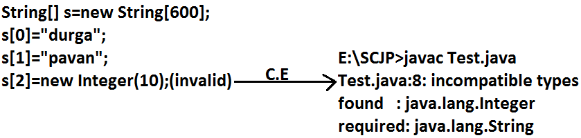
- That is we can always provide guarantee for the type of elements present inside array and hence arrays are safe to use with respect to type that is arrays are type safe.
- But collections are not type safe that is we can't provide any guarantee for the type of elements present inside collection.
- For example if our programming requirement is to hold only string type of objects it is never recommended to go for ArrayList.
- By mistake if we are trying to add any other type we won't get any compile time error but the program may fail at runtime.
Example:
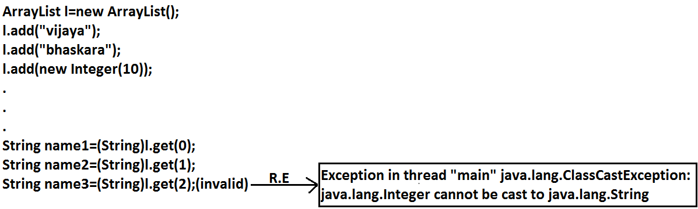
Hence we can't provide guarantee for the type of elements present inside collections that is collections are not safe to use with respect to type.
Case 2: Type-Casting
In the case of array at the time of retrieval it is not required to perform any type casting.
Example:
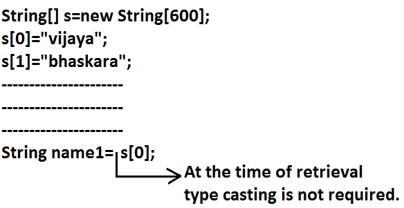
But in the case of collection at the time of retrieval compulsory we should perform type casting otherwise we will get compile time error.
Example:
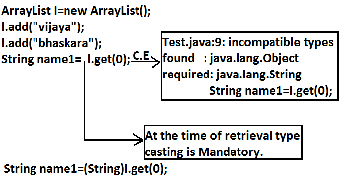
- That is in collections type casting is bigger headache.
- To overcome the above problems of collections(type-safety, type casting)sun people introduced generics concept in 1.5v hence the main objectives of generics are:
- To provide type safety to the collections.
- To resolve type casting problems.
- To hold only string type of objects we can create a generic version of ArrayList as follows.
Example:
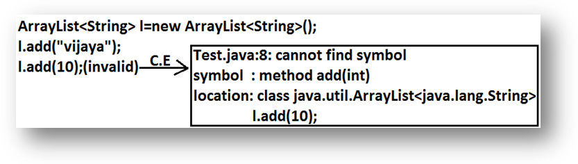
- For this ArrayList we can add only string type of objects by mistake if we are trying to add any other type we will get compile time error that is through generics we are getting type safety.
- At the time of retrieval it is not required to perform any type casting we can assign elements directly to string type variables.
Example:

- That is through generic syntax we can resolve type casting problems.
Conclusion1:
- Polymorphism concept is applicable only for the base type but not for parameter type[usage of parent reference to hold child object is called polymorphism].
Example:
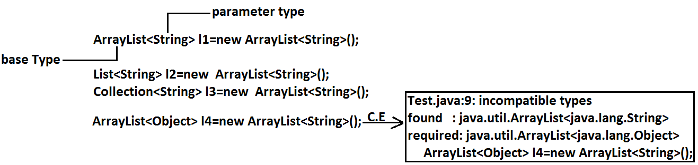
Concluson2:
Collections concept applicable only for objects , Hence for the parameter type we can use any class or interface name but not primitive value(type).Otherwise we will get compile time error.
Example:
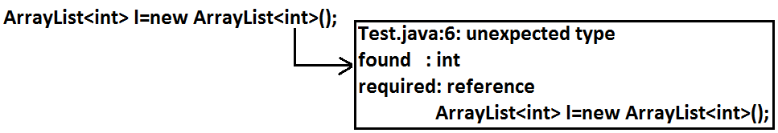
Generic classes:
Until 1.4v a non-generic version of ArrayList class is declared as follows.
Example:
class ArrayList
{
add(Object o);
Object get(int index);
}
- add() method can take object as the argument and hence we can add any type of object to the ArrayList. Due to this we are not getting type safety.
- The return type of get() method is object hence at the time of retrieval compulsory we should perform type casting.
But in 1.5v a generic version of ArrayList class is declared as follows.
Example:
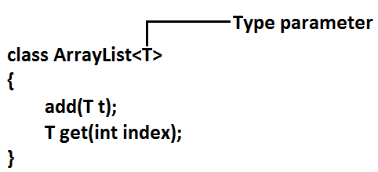
- Based on our requirement T will be replaced with our provided type.
- For Example to hold only string type of objects we can create ArrayList object as follows.
Example:
ArrayList<String> l=new ArrayList<String>();
- For this requirement compiler considered ArrayList class is
Example:
class ArrayList<String>
{
add(String s);
String get(int index);
}
add() method can take only string type as argument hence we can add only string type of objects to the List.
By mistake if we are trying to add any other type we will get compile time error.
Example:
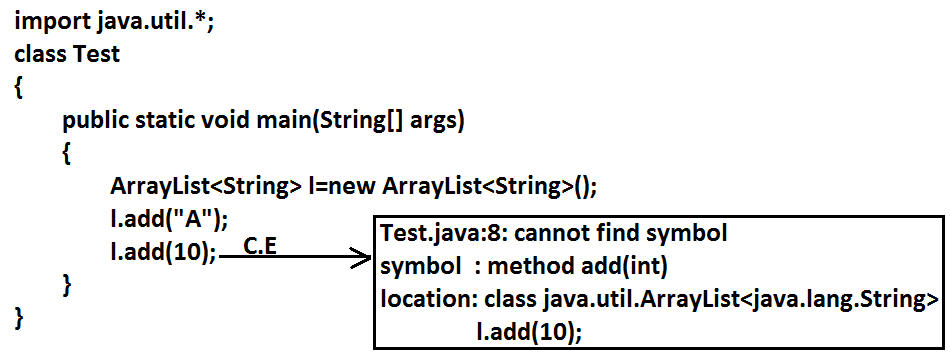
- Hence through generics we are getting type safety.
- At the time of retrieval it is not required to perform any type casting we can assign its values directly to string variables.
Example:
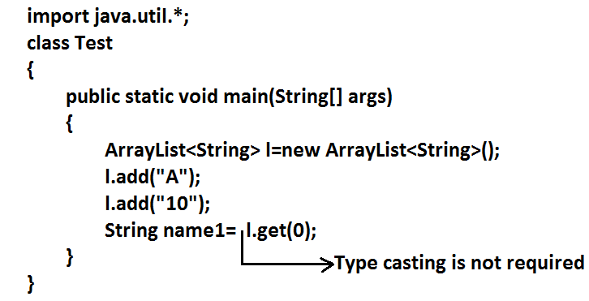
In Generics we are associating a type-parameter to the class, such type of parameterised classes are nothing but Generic classes.
Generic class : class with type-parameter
Based on our requirement we can create our own generic classes also.
Example:
class Account<T>
{}
Account<Gold> g1=new Account<Gold>();
Account<Silver> g2=new Account<Silver>();
Example:
class Gen<T>
{
T obj;
Gen(T obj)
{
this.obj=obj;
}
public void show()
{
System.out.println("The type of object is :"+obj.getClass().getName());
}
public T getObject()
{
return obj;
}
}
class GenericsDemo
{
public static void main(String[] args)
{
Gen<Integer> g1=new Gen<Integer>(10);
g1.show();
System.out.println(g1.getObject());
Gen<String> g2=new Gen<String>("Akshay");
g2.show();
System.out.println(g2.getObject());
Gen<Double> g3=new Gen<Double>(10.5);
g3.show();
System.out.println(g3.getObject());
}
}
Output:
The type of object is: java.lang.Integer
10
The type of object is: java.lang. String
Akshay
The type of object is: java.lang. Double
10.5
Bounded types:
We can bound the type parameter for a particular range by using extends keyword such types are called bounded types.
Example 1:
class Test<T>
{}
Test <Integer> t1=new Test < Integer>();
Test <String> t2=new Test < String>();
- Here as the type parameter we can pass any type and there are no restrictions hence it is unbounded type.
Example 2:
class Test<T extends X>
{}
- If x is a class then as the type parameter we can pass either x or its child classes.
- If x is an interface then as the type parameter we can pass either x or its implementation classes.
Example 1:
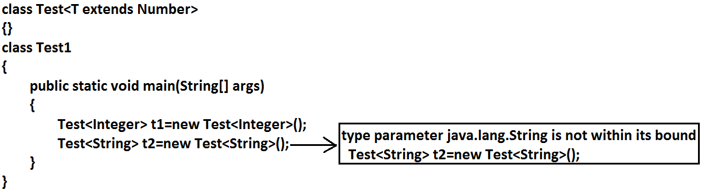
Example 2:
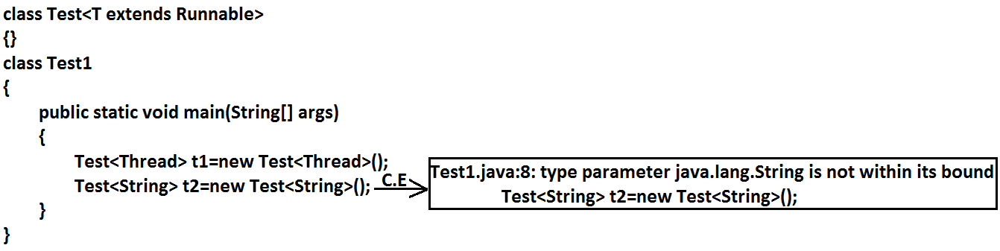
- We can't define bounded types by using implements and super keyword.
Example:
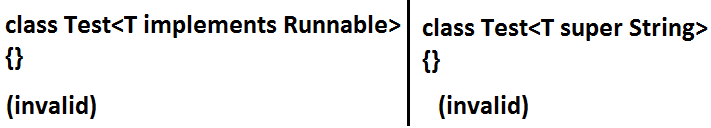
- But implements keyword purpose we can replace with extends keyword.
- As the type parameter we can use any valid java identifier but it convention to use T always.
Example:
We can pass any no of type parameters need not be one.
Example:
HashMap<Integer,String> h=new HashMap<Integer,String>();
We can define bounded types even in combination also.
Example 1:
class Test <T extends Number&Runnable>
{}(valid)
As the type parameter we can pass any type which extends Number class and implements Runnable interface.
Example 2:
class Test<T extends Number&Runnable&Comparable>
{}(valid)
Example 3:
class Test<T extends Number&String>
{}(invalid)
We can't extend more than one class at a time.
Example 4:
class Test<T extends Runnable&Comparable>
{}(valid)
Example 5:
class Test<T extends Runnable&Number>
{}(invalid)
We have to take 1st class followed by interface.
Generic methods and wild-card character (?) :
methodOne(ArrayList<String> l):
This method is applicable for ArrayList of only String type.
Example:
l.add("A");
l.add(null);
l.add(10);//(invalid)
Within the method we can add only String type of objects and null to the List.
methodOne(ArrayList<?> l):
We can use this method for ArrayList of any type but within the method we can't add anything to the List except null.
Example:
l.add(null);//(valid)
l.add("A");//(invalid)
l.add(10);//(invalid)
- This method is useful whenever we are performing only read operation.
methodOne(ArrayList<? Extends x> l):
- If x is a class then this method is applicable for ArrayList of either x type or its child classes.
- If x is an interface then this method is applicable for ArrayList of either x type or its implementation classes.
- In this case also within the method we can't add anything to the List except null.
methodOne(ArrayList<? super x> l):
- If x is a class then this method is applicable for ArrayList of either x type or its super classes.
- If x is an interface then this method is applicable for ArrayList of either x type or super classes of implementation class of x.
- But within the method we can add x type objects and null to the List.
Which of the following declarations are allowed?
- ArrayList<String> l1=new ArrayList<String>();//(valid)
- ArrayList<?> l2=new ArrayList<String>();//(valid)
- ArrayList<?> l3=new ArrayList<Integer>();//(valid)
- ArrayList<? extends Number> l4=new ArrayList<Integer>();//(valid)
- ArrayList<? extends Number> l5=new ArrayList<String>();(invalid)
Output:
Compile time error.
Test.java:10: incompatible types
Found : java.util.ArrayList<java.lang.String>
Required: java.util.ArrayList<? extends java.lang.Number>
ArrayList<? extends Number> l5=new ArrayList<String>();
- ArrayList<?> l6=new ArrayList<? extends Number>();
Output:
Compile time error
Test.java:11: unexpected type
found : ? extends java.lang.Number
required: class or interface without bounds
ArrayList<?> l6=new ArrayList<? extends Number>();
- ArrayList<?> l7=new ArrayList<?>();
Output:
Test.java:12: unexpected type
Found :?
Required: class or interface without bounds
ArrayList<?> l7=new ArrayList<?>();
- We can declare the type parameter either at class level or method level.
Declaring type parameter at class level:
class Test<T>
{
We can use anywhere this 'T'.
}
Declaring type parameter at method level:
We have to declare just before return type.
Example:
public <T> void methodOne1(T t){}//valid
public <T extends Number> void methodOne2(T t){}//valid
public <T extends Number&Comparable> void methodOne3(T t){}//valid
public <T extends Number&Comparable&Runnable> void methodOne4(T t){}//valid
public <T extends Number&Thread> void methodOne(T t){}//invalid
Output:
Compile time error.
Test.java:7: interface expected here
public <T extends Number&Thread> void methodOne(T t){}//valid
public <T extends Runnable&Number> void methodOne(T t){}//invalid
Output:
Compile time error.
Test.java:8: interface expected here
public <T extends Number&Runnable> void methodOne(T t){}//valid
Communication with non generic code:
To provide compatibility with old version sun people compramized the concept of generics in very few area's the following is one such area.
Example:
import java.util.ArrayList;
public class Test {
public static void main(String[] args) {
ArrayList l=new ArrayList();
l.add("A");
methodOne(l);
//l.add(10); //C.E:cannot find symbol,method add(int)
//l.add(10.5); //C.E:cannot find symbol,method add(double)
System.out.println(l);//[A, 10, 10.5, true]
}
public static void methodOne(ArrayList l) {
l.add(10);
l.add(10.5);
l.add(true);
}
}
Conclusions :
- Generics concept is applicable only at compile time, at runtime there is no such type of concept. Hence the following declarations are equal.
ArrayList l=new ArrayList<String>();
ArrayList l=new ArrayList<Integer>(); //All are equal at runtime.
ArrayList l=new ArrayList();
Example 1:
import java.util.*;
class Test
{
public static void main(String[] args)
{
ArrayList l=new ArrayList<String>();
l.add(10);
l.add(10.5);
l.add(true);
System.out.println(l);// [10, 10.5, true]
}
}
Example 2:
import java.util.*;
class Test
{
public void methodOne(ArrayList<String> l){}
public void methodOne(ArrayList<Integer> l){}
}
Output:
Compile time error.
Test.java:4: name clash: methodOne(java.util.ArrayList<java.lang.String>)
and methodOne(java.util.ArrayList<java.lang.Integer>)
have the same erasure
public void methodOne(ArrayList<String> l){}
- The following 2 declarations are equal.
ArrayList<String> l1=new ArrayList();
ArrayList<String> l2=new ArrayList<String>();
- For these ArrayList objects we can add only String type of objects.
Example:
l1.add("A");//valid
l1.add(10); //invalid
|